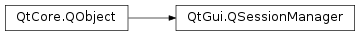

QSessionManager¶
Synopsis¶
Functions¶
- def
allowsErrorInteraction() - def
allowsInteraction() - def
cancel() - def
discardCommand() - def
isPhase2() - def
release() - def
requestPhase2() - def
restartCommand() - def
restartHint() - def
sessionId() - def
sessionKey() - def
setDiscardCommand(arg__1) - def
setManagerProperty(name, value) - def
setManagerProperty(name, value) - def
setRestartCommand(arg__1) - def
setRestartHint(arg__1)
Detailed Description¶
The
PySide2.QtGui.QSessionManagerclass provides access to the session manager.A session manager in a desktop environment (in which Qt GUI applications live) keeps track of a session, which is a group of running applications, each of which has a particular state. The state of an application contains (most notably) the documents the application has open and the position and size of its windows.
The session manager is used to save the session, e.g., when the machine is shut down, and to restore a session, e.g., when the machine is started up. We recommend that you use
PySide2.QtCore.QSettingsto save an application’s settings, for example, window positions, recently used files, etc. When the application is restarted by the session manager, you can restore the settings.
PySide2.QtGui.QSessionManagerprovides an interface between the application and the platform’s session manager. In Qt, session management requests for action are handled by the two signalsQGuiApplication.commitDataRequest()andQGuiApplication.saveStateRequest(). Both provide a reference to aPySide2.QtGui.QSessionManagerobject as argument. The session manager can only be accessed in slots invoked by these signals.Warning
If you use
PySide2.QtGui.QSessionManager, you should disable fallback session management:QGuiApplication.setFallbackSessionManagementEnabled().No user interaction is possible unless the application gets explicit permission from the session manager. You ask for permission by calling
PySide2.QtGui.QSessionManager.allowsInteraction()or, if it is really urgent,PySide2.QtGui.QSessionManager.allowsErrorInteraction(). Qt does not enforce this, but the session manager may.You can try to abort the shutdown process by calling
PySide2.QtGui.QSessionManager.cancel().For sophisticated session managers provided on Unix/X11,
PySide2.QtGui.QSessionManageroffers further possibilities to fine-tune an application’s session management behavior:PySide2.QtGui.QSessionManager.setRestartCommand(),PySide2.QtGui.QSessionManager.setDiscardCommand(),PySide2.QtGui.QSessionManager.setRestartHint(),PySide2.QtCore.QObject.setProperty(),PySide2.QtGui.QSessionManager.requestPhase2(). See the respective function descriptions for further details.See also
PySide2.QtGui.QGuiApplicationSession Management
-
PySide2.QtGui.QSessionManager.RestartHint¶ This enum type defines the circumstances under which this application wants to be restarted by the session manager. The current values are:
Constant Description QSessionManager.RestartIfRunning If the application is still running when the session is shut down, it wants to be restarted at the start of the next session. QSessionManager.RestartAnyway The application wants to be started at the start of the next session, no matter what. (This is useful for utilities that run just after startup and then quit.) QSessionManager.RestartImmediately The application wants to be started immediately whenever it is not running. QSessionManager.RestartNever The application does not want to be restarted automatically. The default hint is
RestartIfRunning.
-
PySide2.QtGui.QSessionManager.allowsErrorInteraction()¶ Return type: PySide2.QtCore.boolReturns
trueif error interaction is permitted; otherwise returnsfalse.This is similar to
PySide2.QtGui.QSessionManager.allowsInteraction(), but also enables the application to tell the user about any errors that occur. Session managers may give error interaction requests higher priority, which means that it is more likely that an error interaction is permitted. However, you are still not guaranteed that the session manager will allow interaction.
-
PySide2.QtGui.QSessionManager.allowsInteraction()¶ Return type: PySide2.QtCore.boolAsks the session manager for permission to interact with the user. Returns true if interaction is permitted; otherwise returns
false.The rationale behind this mechanism is to make it possible to synchronize user interaction during a shutdown. Advanced session managers may ask all applications simultaneously to commit their data, resulting in a much faster shutdown.
When the interaction is completed we strongly recommend releasing the user interaction semaphore with a call to
PySide2.QtGui.QSessionManager.release(). This way, other applications may get the chance to interact with the user while your application is still busy saving data. (The semaphore is implicitly released when the application exits.)If the user decides to cancel the shutdown process during the interaction phase, you must tell the session manager that this has happened by calling
PySide2.QtGui.QSessionManager.cancel().Here’s an example of how an application’s
QGuiApplication.commitDataRequest()might be implemented:MyMainWidget::MyMainWidget(QWidget *parent) :QWidget(parent) { QGuiApplication::setFallbackSessionManagementEnabled(false); connect(qApp, SIGNAL(commitDataRequest(QSessionManager)), SLOT(commitData(QSessionManager))); } void MyMainWidget::commitData(QSessionManager& manager) { if (manager.allowsInteraction()) { int ret = QMessageBox::warning( mainWindow, tr("My Application"), tr("Save changes to document?"), QMessageBox::Save | QMessageBox::Discard | QMessageBox::Cancel); switch (ret) { case QMessageBox::Save: manager.release(); if (!saveDocument()) manager.cancel(); break; case QMessageBox::Discard: break; case QMessageBox::Cancel: default: manager.cancel(); } } else { // we did not get permission to interact, then // do something reasonable instead } }If an error occurred within the application while saving its data, you may want to try
PySide2.QtGui.QSessionManager.allowsErrorInteraction()instead.
-
PySide2.QtGui.QSessionManager.cancel()¶ Tells the session manager to cancel the shutdown process. Applications should not call this function without asking the user first.
-
PySide2.QtGui.QSessionManager.discardCommand()¶ Return type: list of strings Returns the currently set discard command.
To iterate over the list, you can use the foreach pseudo-keyword:
foreach (const QString &command, mySession.discardCommand()) do_something(command);
-
PySide2.QtGui.QSessionManager.isPhase2()¶ Return type: PySide2.QtCore.boolReturns
trueif the session manager is currently performing a second session management phase; otherwise returnsfalse.
-
PySide2.QtGui.QSessionManager.release()¶ Releases the session manager’s interaction semaphore after an interaction phase.
-
PySide2.QtGui.QSessionManager.requestPhase2()¶ Requests a second session management phase for the application. The application may then return immediately from the
QGuiApplication.commitDataRequest()orQApplication.saveStateRequest()function, and they will be called again once most or all other applications have finished their session management.The two phases are useful for applications such as the X11 window manager that need to store information about another application’s windows and therefore have to wait until these applications have completed their respective session management tasks.
Note
If another application has requested a second phase it may get called before, simultaneously with, or after your application’s second phase.
-
PySide2.QtGui.QSessionManager.restartCommand()¶ Return type: list of strings Returns the currently set restart command.
To iterate over the list, you can use the foreach pseudo-keyword:
foreach (const QString &command, mySession.restartCommand()) do_something(command);
-
PySide2.QtGui.QSessionManager.restartHint()¶ Return type: PySide2.QtGui.QSessionManager.RestartHintReturns the application’s current restart hint. The default is
RestartIfRunning.
-
PySide2.QtGui.QSessionManager.sessionId()¶ Return type: unicode Returns the identifier of the current session.
If the application has been restored from an earlier session, this identifier is the same as it was in the earlier session.
-
PySide2.QtGui.QSessionManager.sessionKey()¶ Return type: unicode Returns the session key in the current session.
If the application has been restored from an earlier session, this key is the same as it was when the previous session ended.
The session key changes with every call of commitData() or saveState().
-
PySide2.QtGui.QSessionManager.setDiscardCommand(arg__1)¶ Parameters: arg__1 – list of strings Sets the discard command to the given
command.
-
PySide2.QtGui.QSessionManager.setManagerProperty(name, value)¶ Parameters: - name – unicode
- value – unicode
This is an overloaded function.
Low-level write access to the application’s identification and state records are kept in the session manager.
The property called
namehas its value set to the stringvalue.
-
PySide2.QtGui.QSessionManager.setManagerProperty(name, value) Parameters: - name – unicode
- value – list of strings
Low-level write access to the application’s identification and state record are kept in the session manager.
The property called
namehas its value set to the string listvalue.
-
PySide2.QtGui.QSessionManager.setRestartCommand(arg__1)¶ Parameters: arg__1 – list of strings If the session manager is capable of restoring sessions it will execute
commandin order to restore the application. The command defaults toappname -session id
The
-sessionoption is mandatory; otherwisePySide2.QtGui.QGuiApplicationcannot tell whether it has been restored or what the current session identifier is. SeeQGuiApplication.isSessionRestored()andQGuiApplication.sessionId()for details.If your application is very simple, it may be possible to store the entire application state in additional command line options. This is usually a very bad idea because command lines are often limited to a few hundred bytes. Instead, use
PySide2.QtCore.QSettings, temporary files, or a database for this purpose. By marking the data with the uniquePySide2.QtGui.QSessionManager.sessionId(), you will be able to restore the application in a future session.
-
PySide2.QtGui.QSessionManager.setRestartHint(arg__1)¶ Parameters: arg__1 – PySide2.QtGui.QSessionManager.RestartHintSets the application’s restart hint to
hint. On application startup, the hint is set toRestartIfRunning.Note
These flags are only hints, a session manager may or may not respect them.
We recommend setting the restart hint in
QGuiApplication.saveStateRequest()because most session managers perform a checkpoint shortly after an application’s startup.
© 2018 The Qt Company Ltd. Documentation contributions included herein are the copyrights of their respective owners. The documentation provided herein is licensed under the terms of the GNU Free Documentation License version 1.3 as published by the Free Software Foundation. Qt and respective logos are trademarks of The Qt Company Ltd. in Finland and/or other countries worldwide. All other trademarks are property of their respective owners.